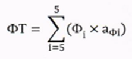
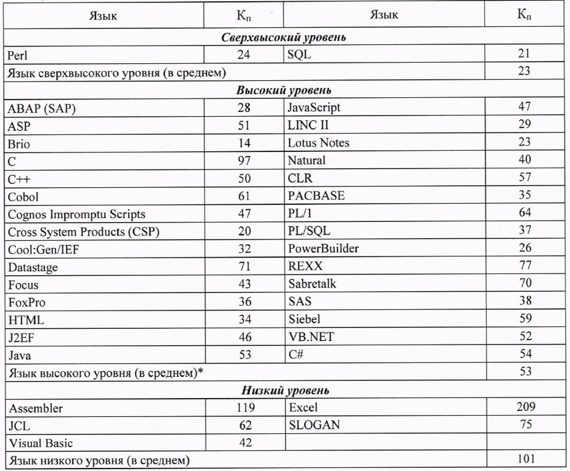
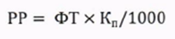
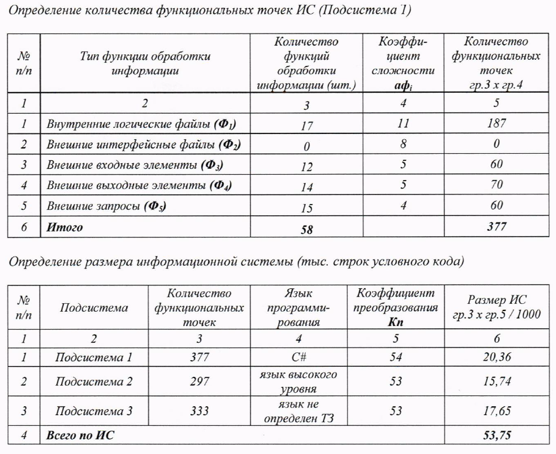
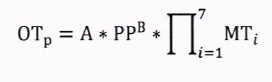
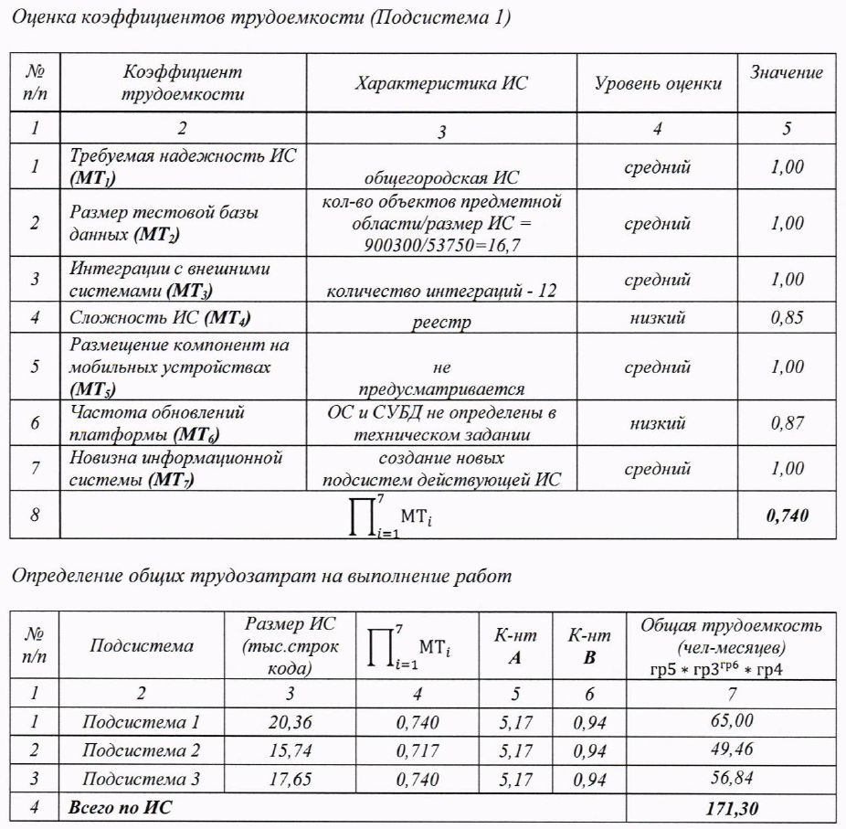

Содержание
- Определение размера разработки
1.1. Оценка функций обработки информации ИС
1.2. Определение функциональных точек
1.3. Расчет объемов кода
- Расчет общих трудозатрат
2.1. Определение значений поправочных коэффициентов
2.2. Вычисление общих трудозатрат
- Определение итоговой стоимости разработки
3.1. Определение численности исполнителей
3.2. Расчет коэффициента уровня квалификации и участия
3.3. Определение размера средней выработки
3.4. Расчет стоимости разработки
Таблица 1. Сокращения и расшифровки 1 | Сокращение | Расшифровка| |:————————|:—————–| | ИС | информационная система | | ТЗ | техническое задание | | РР | размер разрабатываемой ИС (тыс. строк условного кода) | | ФТ | функциональная точка | | Кп | коэффициент преобразования | | Фi | функциональная точка | | аФi| значение коэффициента сложности для функций обработки информации i-го типа |
Определение размера разработки
Оценка функций обработки информации ИС
По заданным в ТЗ функциональным требованиям оцениваем количество функций обработки информации - производим подсчет различных файлов, таблиц, api проекта.
Перечень функций обработки информации приведен в Таблице 2.
Таблица 2. Значения аФi
| Тип функции обработки информации | Значение коэффициента аФi | |:————————|:—————–| | Внутренние логические файлы (Ф1) | 11 | | Внешние интерфейсные файлы (Ф2) | 8 | | Внешние входные элементы (Ф3) | 5 | | Внешние выходные элементы (Ф4) | 5 | | Внешние запросы (Ф5) | 4 |
Примеры:
Ф1 - внутренние справочники, таблицы и файлы, которые поддерживаются внутри ИС.
Ф2 - внешние данные, необходимые системе (API).
Ф3 - данные, получаемые ИС от пользователей (внешние справочники).
Ф4 - данные, предоставляемые пользователю или во внешние файлы с обработкой данных (отчетность/дашборды).
Ф5 - данные, которые ИС предоставляет по запросам внеiних сервисов (внешние api).
Определение функциональных точек
Далее производим подсчет размера разрабытываемой ИС по формуле ниже:

Расчет объемов кода
Объемов кода зависит от предполагаемого к использованию языка программирования.(см. рисунок ниже)

Далее исходя из данных таблицы производиться расчет:

Пример рассчетов данного пункта приведет ниже:

Расчет общих трудозатрат

Таблица 3. Сокращения и расшифровки 2 | Сокращение | Расшифровка | |:—|:—| | ОТр > | общие расчетные трудозатраты, чел.-месяцев | | РР | размер разрабатываемой ИС (тыс. строк условного кода) | | MTi | i-й коэффициент трудоемкости | | А, В | коэффициенты связи модели (установлено расчетно А = 5, В = 0,94) |
Если ОТр > 1,75, то далее в расчетах значение ОТр = 1,75.
Определение значений поправочных коэффициентов
При определении трудозатрат на разработку ИС в расчеты включаются следующие коэффициенты трудоемкости:
- Требуемая надежность информационной системы (MT₁)
- Размер тестовой базы данных (MT₂)
- Интеграции с внешними системами (MT₃)
- Сложность информационной системы (MT₄)
- Размещение компонент на мобильных устройствах (MT₅)
- Частота обновлений платформы (MT₆)
- Новизна информационной системы (MT₇)
Значения каждого из МТ определяются в зависимости от уровня оценки по шкале:
* низкий (МТ < 1) * средний (МТ = 1) * высокий (МТ > 1) Оценка коэффициентов трудоемкости проводится на основе данных ТЗ на разработку ИС. При отсутствии в техническом задании информации, необходимой для оценки коэффициента трудоемкости, данному коэффициенту присваивается уровень оценки «низкий».
Уровни оценки МТ:
1. МТ1 > - в зависимости от типа ИС:
* Отраслевая ИС = 0,9
* Общегородская ИС = 1
* Критичная ИС = 1,15
2. МТ2 > - в зависимости от размера тестовой базы данных ИС (в строках кода):
* Менее 10 = 0,93
* 10-100 = 1
* > 100 = 1,07
3. МТ3 > - в зависимости от планируемого кол-ва интеграций ИС (прием/передача данных во внешнюю систему):
* Менее 10 = 0,95
* 10-20 = 1
* > 20 = 1,05
4. МТ4 > - в зависимости от класса ИС:
* Информационно-поисковая (реестр, регистр) = 0,85
* Обеспечение деятельности органов исполнительной власти, порталы = 1
* Информационно-аналитическая, управляющая = 1,15
5. МТ5 > - в зависимости от использования ИС мобильных устройств:
* Не предусматривается = 1
* Предусматривается = 1,07
6. МТ6 > - в зависимости от частоты обновлений ОС и СУБД за 5 лет:
* Не чаще 1 раза в год = 0,87
* 1 раз в год - 1 раз в полгода = 1
* Чаще 1 раза в полгода = 1,15
7. МТ7 > - в зависимости от характера выполянемых работ:
* Развитие/модерация подсистем действующей ИС = 0,97
* Создание новых подсистем действующей ИС = 1
* Создание новой ИС = 1,04
Вычисление общих трудозатрат
Пример вычисления трудозатрат

Определение итоговой стоимости разработки
Определение численности исполнителей
Численность исполнителей определяется по формуле: